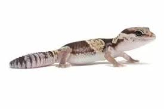

Fat-Tailed Gecko
Hemitheconyx caudicinctus, known as the African Fat-Tailed gecko, is native to West Africa, ranging from Senegal to northern Cameroon
- Habitat: tropical ; terrestrial
- Lifespan: 16 (high) years
- Food Habits: carnivore (eats terrestrial vertebrates,eats body fluids) insectivore vermivore
- Average mass: 50 g
Although they only have a small geographic range where they are native, African Fat-tailed Geckos are one of the most popular reptile pets today.